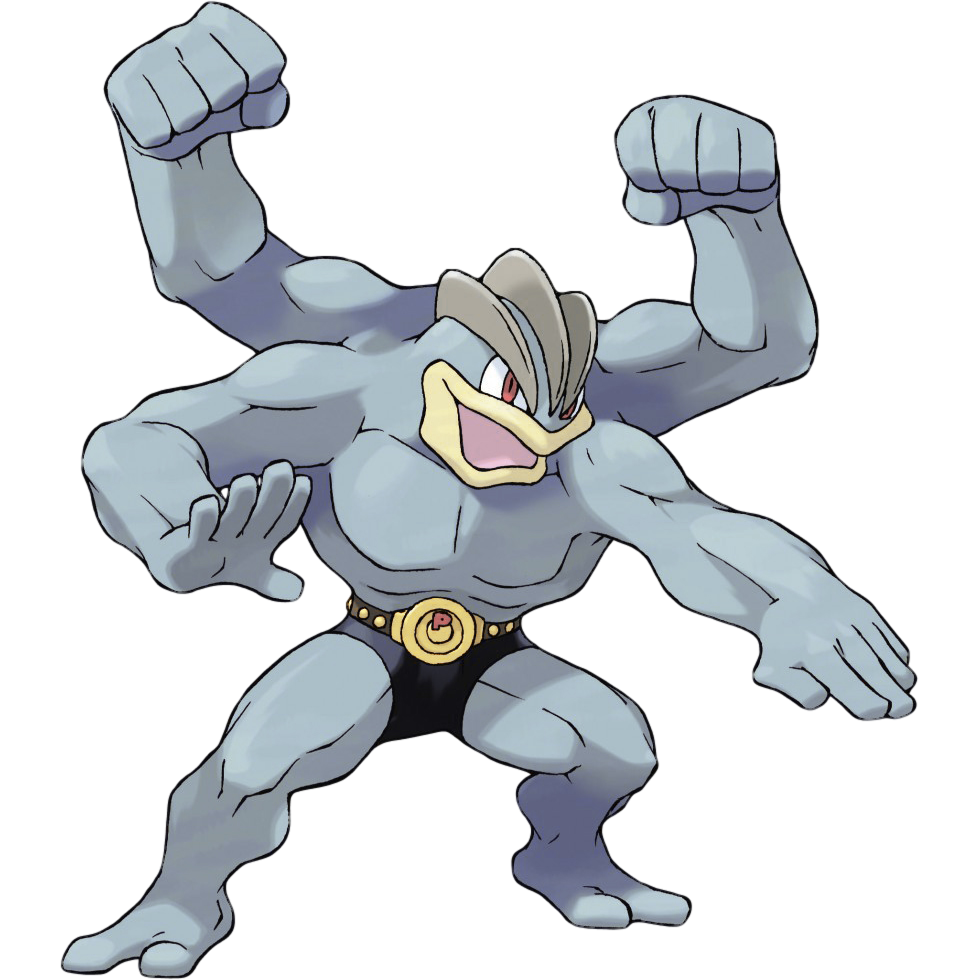

Hurray! You’ve saved Machamp!
Machamp flexes (He could have totally saved himself), but acknowledges your small role in his escape by giving you this Challenge Badge.
Who doesn't love a challenge? When properly scaffolded with instruction and balanced according to player skill, challenges in games can be motivation in and of themselves. In fact, they are the core of every game's basic formula: Train the player in the basics and present challenges of increasing difficulty until the "Final Boss" which requires skill mastery.
Good games also variety the tasks with which they challenge players. They avoid repetition and burnout by changing up what players are asked to do. Earn a high score! Collect all the items! Defeat five enemies! Each task may use similar base skills, but appeals to different player styles.